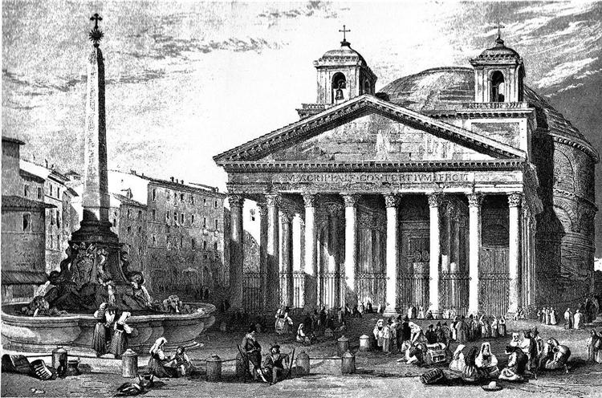

Mutationem quis metuit
Mutationem quis metuit? Quid vero fieri potest sine mutatione? quid vero gratius aut fa miliarius universi naturae? tune ipse balneo uti potes, nisi lignis mutatis? num ali, nisi cibis mutatis? num quid aliud perfici potest sine mutatione? Non igitur vides par esse tui mutationem et pariter necessariam universi naturae?
Ex iis, quae tibi molestiam creant, multa supervacanea tollere potes, quippe quae tota in opinione tua sita sint: atque amplum liberumque spatium tibi comparabis, si totum mundum mente complexus fueris et aeternum aevum consideraveris et singulatim celerrimam omniam rerum mutationem contemplatus fueris, quam breve sit inter ortum et dissolutionem temporis spatium, quam immensum contra, quod ortum praecessit, quam infinitum pariter id, quod dissolutionem sequetur.
Qualem oporteat deprehendi a morte tum corpore tum animo; brevitatem vitae, immensitatem aevi praeteriti ac futuri et omnis materiae imbecillitatem considera.